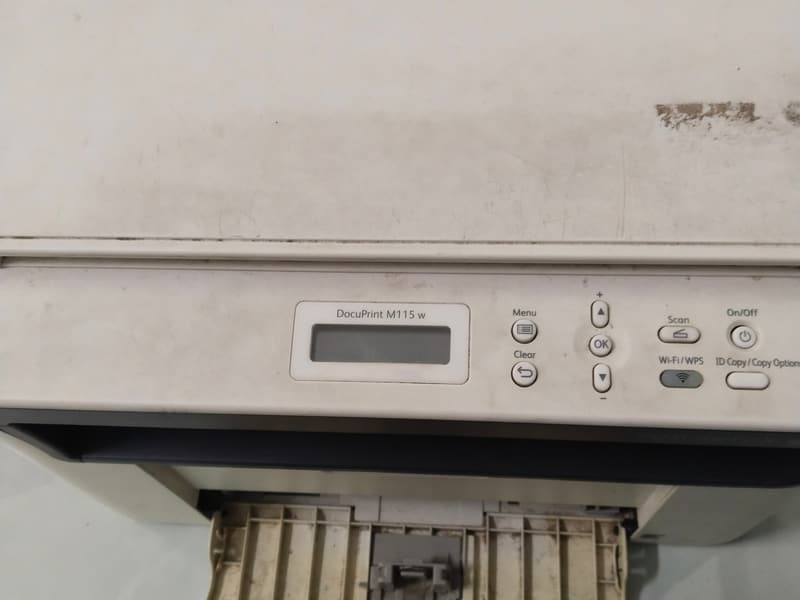
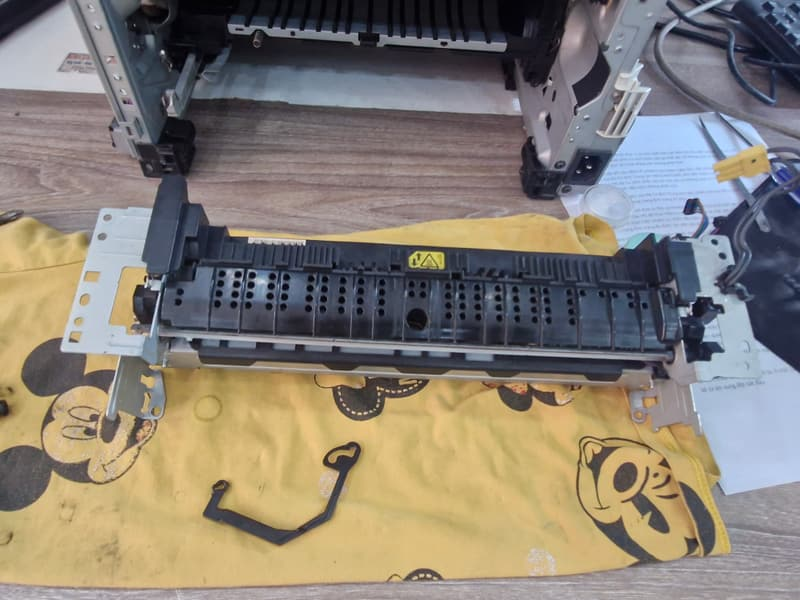

Máy in bị kẹt giấy: lấy ra đúng cách để không rách giấy trong máy
Giật mạnh là cách dễ làm rách giấy nhất, và một mảnh giấy nhỏ còn sót lại sẽ khiến máy tiếp tục báo kẹt. Làm chậm theo các bước dưới đây là xong trong vài phút.
Máy kẹt giấy kiểu nào?
Hệ thống 9 địa chỉ: Quận 8, Quận 10, Quận 11, Phú Nhuận, Bình Thạnh, Bình Chánh, Thủ Đức, Bình Dương.
Tìm hình giống tờ giấy của anh/chị, mũi tên đỏ chỉ đúng chỗ lỗi. Hình là minh hoạ, bấm vào hình để xem nguyên nhân.
- Giấy nhăn, kẹt gần cửa ra. Nguyên nhân: Giấy ẩm, hoặc bộ sấy đã mòn. Nên làm: Đổi giấy trước, kẹt lại thì cần kiểm tra bộ sấy.
- Máy không kéo giấy, kêu rè. Nguyên nhân: Bánh kéo giấy đã mòn. Nên làm: Lau bánh kéo, không hết thì thay.
- Mỗi lần kéo vào 2 đến 3 tờ. Nguyên nhân: Giấy dính nhau hoặc khay quá đầy. Nên làm: Xòe giấy, bớt giấy trong khay.
- Báo kẹt nhưng không thấy giấy. Nguyên nhân: Còn mảnh giấy nhỏ trong máy, hoặc cảm biến bị kẹt. Nên làm: Soi đèn tìm mảnh giấy.
- Kẹt ngay khi vừa bật máy. Nguyên nhân: Giấy còn sót ở bên trong. Nên làm: Mở tất cả các nắp để kiểm tra.
Cách lấy giấy kẹt ra
- Tắt máy và rút điện. Máy vừa in xong thì chờ khoảng 15 phút cho nguội, vì khu vực bộ sấy rất nóng.
- Mở nắp trước, lấy hộp mực ra và đặt nơi tối, trên một tờ giấy.
- Rút khay giấy ra. Kiểm tra cả nắp sau nếu máy có.
- Cầm giấy bằng hai tay và kéo chậm theo đúng chiều giấy chạy. Không giật, không kéo ngược chiều nếu tránh được.
- Không dùng kéo, kẹp kim loại hay tua vít để cạy, vì rất dễ làm xước trống và các trục.
- Rách thì soi đèn pin để tìm phần giấy còn lại, sau đó lắp lại hộp mực và đóng hết các nắp.
Để không bị kẹt lại
- Xòe tập giấy trước khi đặt vào khay và không xếp vượt vạch tối đa.
- Chỉnh thanh chặn giấy sát vừa với tập giấy, không quá chặt.
- Không dùng lại giấy đã in một mặt nếu giấy bị cong hoặc có ghim.
- Giữ giấy kín trong gói. Giấy ẩm là nguyên nhân kẹt rất thường gặp ở văn phòng máy lạnh.
Khi nào là lỗi linh kiện
Kẹt lặp lại với giấy mới và khay xếp đúng thì không còn là chuyện giấy nữa. Thường gặp nhất là bánh kéo giấy mòn, khiến máy không ăn giấy và kêu rè. Giấy nhăn ở cửa ra lặp đi lặp lại thì cần kiểm tra bao lụa, lô sấy.


Thử rồi vẫn chưa được?
Gọi hoặc gửi ảnh bản in qua Zalo, cửa hàng sẽ nói anh/chị biết nên làm gì tiếp theo và báo giá trước. Văn phòng, cửa hàng ở nội thành TP.HCM có nhiều máy thì nhắn danh sách dòng máy để cửa hàng sắp xếp một lượt. Có xuất hoá đơn VAT, bảo hành tính theo số trang in.
Gọi 0986 704 260 Gửi ảnh qua Zalo
Giá tham khảo
| Hạng mục | Giá |
|---|---|
| Bánh kéo giấy | 120.000 – 200.000đ |
| Bao lụa / lô sấy | 250.000 – 650.000đ |
Giá chốt sau khi xem máy, anh/chị đồng ý thì mới làm.
Hệ thống 9 địa chỉ, chọn nơi gần anh/chị
- Quận 8 5/19 Phạm Hùng, Chánh Hưng
- Quận 10 77 Cửu Long, Hòa Hưng
- Quận 10 79 Bắc Hải
- Quận 11 64 Bình Thới
- Phú Nhuận 240 Nguyễn Trọng Tuyển
- Bình Thạnh 1/2/26 Võ Oanh
- Bình Chánh 203 Thế Lữ, Tân Nhựt
- Thủ Đức 75 đường số 4, KDC Tam Bình
- Bình Dương 3 Lái Thiêu 1
Gọi hoặc nhắn Zalo 0986 704 260 cho mọi địa chỉ. Bấm vào địa chỉ để mở chỉ đường.
Câu hỏi thường gặp
Canon LBP2900 hay kẹt giấy thì sao?
Với dòng này, nên kiểm tra giấy và khay trước. Nếu máy không kéo giấy hoặc giấy vào lệch nhiều lần thì thường do bánh kéo giấy đã mòn sau thời gian dài sử dụng.
Giấy kẹt rồi rách, còn mảnh nhỏ không lấy được thì sao?
Đừng dùng vật cứng để cạy. Chụp ảnh chỗ kẹt và gửi Zalo, sau đó tắt máy cho tới khi lấy được mảnh giấy ra, in tiếp có thể làm kẹt nặng hơn.